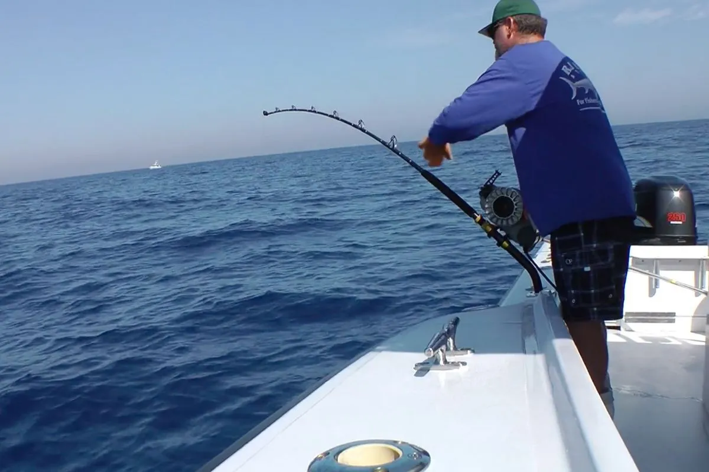
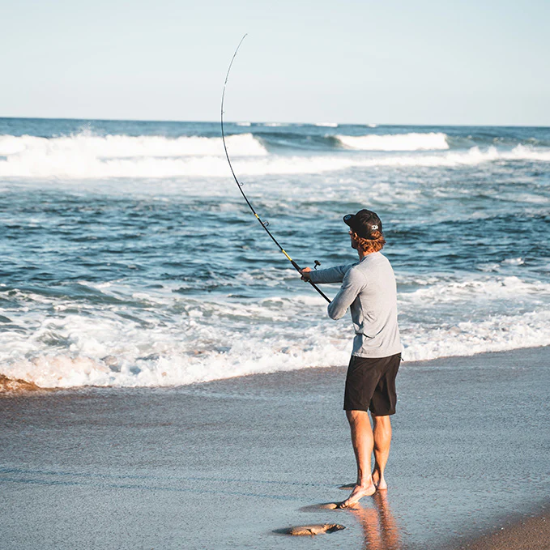
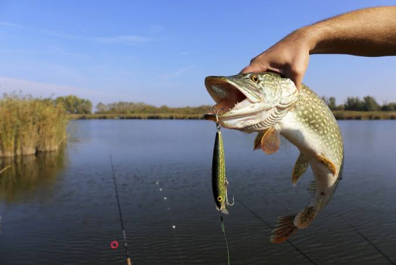
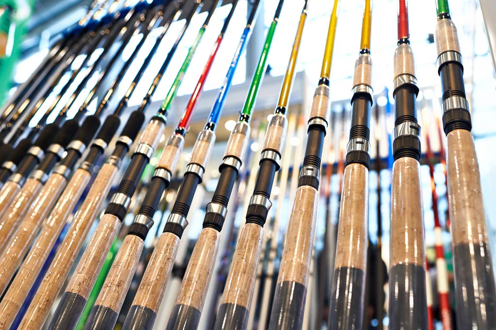
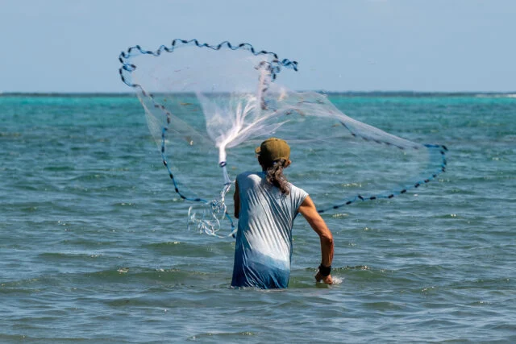
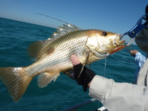
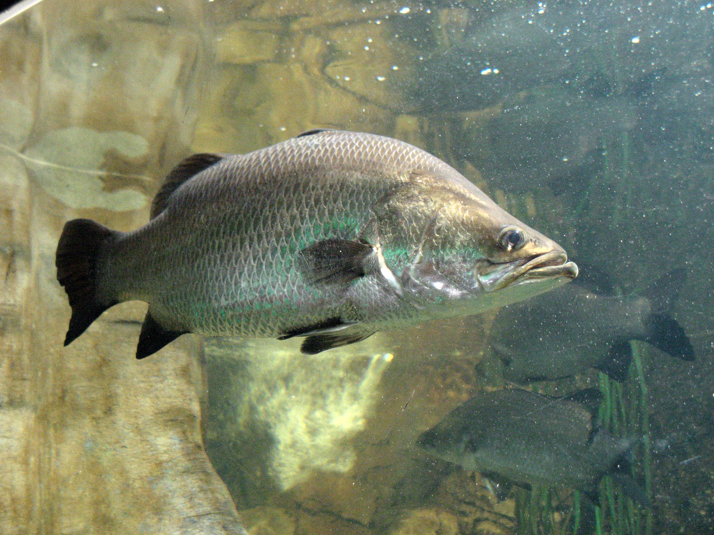
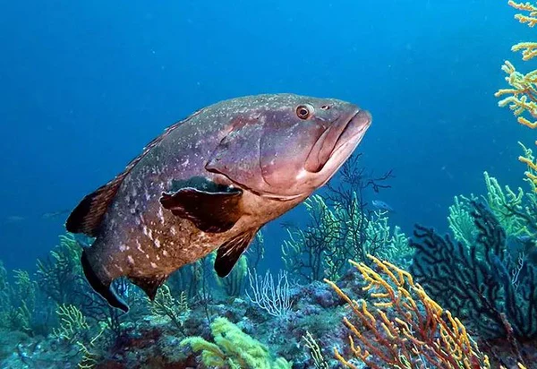
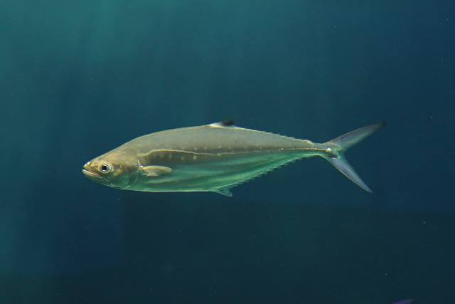
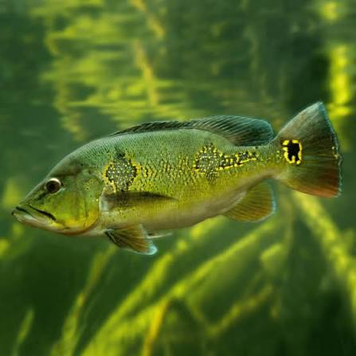

Fishing started over 40,000 years ago as a basic survival method mainly using wooden spears, basic weighted nets and bone rods. It was also a job for commoners, with fishermans trading their daily catches for other necessities in marketplaces.
Although fishing has been industrialized and main supplies come from fish farms, fishing is still a popular hobby amongst many enthusiasts living near water bodies seeking more time with nature, and dopamine inducing catches.

Deep sea fishing is a sport and commercial activity that takes place in deep ocean waters far away from any visible shore. It targets large, powerful marine species like marlins, tunas, and groupers using specialized, heavy-duty equipment.

Shore, or coastline fishing involves casting lines from beaches, jetties, or rocky breakwaters, targeting species like barramundi, groupers, and stingrays using surfcasting or bottom-feeder rigs.

Freshwater fishing involves catching fish in lakes, rivers, and reservoirs using rods, reels, and specific baits or lures. Popular target species include bass, tilapia, and catfish, while essential gear typically consists of natural, and artificial baits
Rod choice depends heavily on the fishing style. Lighter, flexible rods suit freshwater casting while heavier, stiffer rods are built to handle the strain of deep sea catches.
Fishing reels generally fall into four main categories, categorized by their design and how line is released: Spinning, Baitcasting, Spincast, and Fly reels. Choosing the right one depends on your experience level and the target fish.


Angling uses a rod, reel and hook to catch one fish at a time, great as a hobby. On the other end, netting utilizes mesh nets to capture numerous fishes at once, typically used for commercial selling.
Netting can catch accidental unwanted species, tear through underwater plants, and ruin certain aquatic ecosystems in the process. Be sure to look out for legal rules and restrictions in your area before net fishing.
increase in Vitamin D intake
lower risk of developing chronic lung diseases
lower perceived stress score
calories burnt per hour
Baits are natural or artificial substances used to attract fish via scent, taste, and or appearance, while lures are artificial devices designed to mimic prey and entice fish to bite via action, flash, and vibration.
The choice between baits and lures often depends on the target species, water conditions, and personal preference. Baits are effective for attracting fish with a natural scent or taste, while lures can be more versatile and exciting to use.





| Time of Day | Time Slot | Rating for Fishing | Additional Notes |
|---|---|---|---|
| Morning | 06:00 to 10:00 | Excellent | Fishes are very active now, feeding after the cool night. |
| Noon | 10:00 to 16:00 | Poor | Bright and hot sun pushes fishes to swim to deeper, more shaded waters. |
| Evening | 16:00 to 22:00 | Excellent | Second major feeding window as temperatures start to drop. |
| Night | 22:00 to 06:00 | Decent | Best for catfishes and other nocturnal feeders. |
Yes! We are also fishing enthusiasts and have spent countless hours by the water, learning the art of angling. From the thrill of the first bite to the satisfaction of a successful catch, our experiences have shaped our understanding of this hobby and deepened our appreciation for the natural world.
Come join us in our fishing adventures! We are part of a vibrant community of anglers who share tips, stories, and catches. Whether you're a seasoned pro or a curious newbie, you'll find a welcoming space to connect with fellow fishers.
We value your feedback and are always looking to improve our content and resources. If you have any suggestions, questions, or stories to share, please reach out to us via the feedback form on the website. Your input greatly helps us create a better experience for everyone in the fishing community.